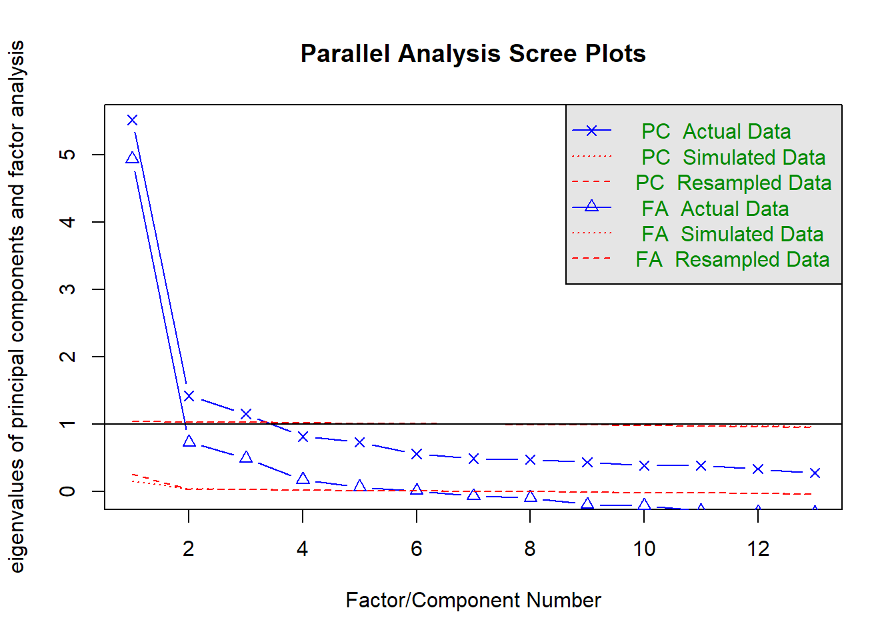

2.2 Importing Excel Files
One way to get Excel files directly into R is by using the XLConnect package. Install the package, and try using the readWorksheetFromFile() function to load the data, and assign it to an object called df:
# Run this only once, to download and install the package:
install.packages("XLConnect")
# Load the package:
library(XLConnect)
# Read an Excel file into 'df':
df <- readWorksheetFromFile("your_file.xlsx",
sheet = 1)2.2.1 Inspect the data
R does not work with a single spreadsheet (SPSS or Excel). Instead, it can keep many objects in memory. The object df is a data.frame; an object that behaves similar to a spreadsheet. To see a description of the object, look at the Environment tab in the top right of Rstudio, and click the arrow next to df.

As you can see, the on the top-right pane Environment, your file is now listed as a data set in your RStudio environment.
You can make a quick copy of this data set by assigning the df object to a new object. This way, you can edit one, and leave the other unchanged. Assign the object df to a new object called df_backup:
You can also have a look at the contents of df by clicking the object in the Environment panel, or running the command head(df).